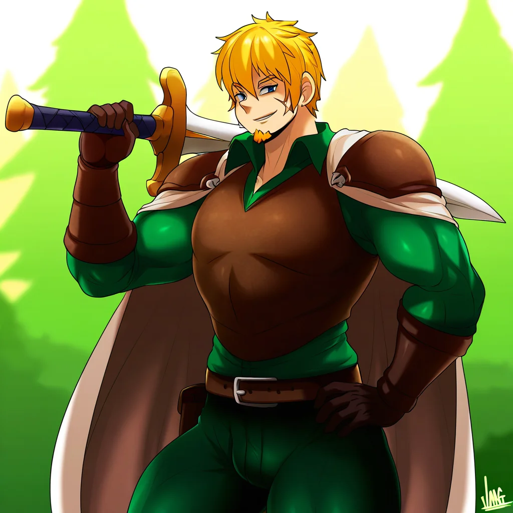

img2
20251022_233242_saber_daz-neocoill.webp [1/34]
1024×1024 • 1:1 • 5.0 KB
20251022_233242_rance_daz-neocoill.webp [2/34]
1024×1024 • 1:1 • 5.1 KB
20251022_233236_saber_daz-afrobull.webp [3/34]
1024×1024 • 1:1 • 5.0 KB
20251022_233236_rance_daz-afrobull.webp [4/34]
1024×1024 • 1:1 • 5.1 KB
20251022_233113_saber_daz-personal_ami.webp [5/34]
1024×1024 • 1:1 • 5.0 KB
20251022_233113_rance_daz-personal_ami.webp [6/34]
1024×1024 • 1:1 • 5.1 KB
20251022_233109_saber_daz-k-suwabe.webp [7/34]
1024×1024 • 1:1 • 5.0 KB
20251022_233109_rance_daz-k-suwabe.webp [8/34]
1024×1024 • 1:1 • 5.1 KB
 20251022_231450_saber_daz-neocoill.webp [9/34]
20251022_231450_saber_daz-neocoill.webp [9/34]
1024×1024 • 1:1 • 78.5 KB
 20251022_231450_rance_daz-neocoill.webp [10/34]
20251022_231450_rance_daz-neocoill.webp [10/34]
1024×1024 • 1:1 • 76.7 KB
20251022_231439_saber_daz-afrobull.webp [11/34]
1024×1024 • 1:1 • 76.3 KB
20251022_231439_rance_daz-afrobull.webp [12/34]
1024×1024 • 1:1 • 72.4 KB
20251022_231334_saber_daz-personal_ami.webp [13/34]
1024×1024 • 1:1 • 59.6 KB
20251022_231334_rance_daz-personal_ami.webp [14/34]
1024×1024 • 1:1 • 66.3 KB
20251022_231329_saber_daz-k-suwabe.webp [15/34]
1024×1024 • 1:1 • 94.4 KB
20251022_231329_rance_daz-k-suwabe.webp [16/34]
1024×1024 • 1:1 • 99.7 KB
 20251022_184900_saber_daz-dr_rex.webp [17/34]
20251022_184900_saber_daz-dr_rex.webp [17/34]
1024×1024 • 1:1 • 96.7 KB
20251022_184900_rance_daz-dr_rex.webp [18/34]
1024×1024 • 1:1 • 110.9 KB
20251022_184804_saber_daz-ebifurya.webp [19/34]
1024×1024 • 1:1 • 86.9 KB
20251022_184804_rance_daz-ebifurya.webp [20/34]
1024×1024 • 1:1 • 93.6 KB
 20251022_184746_saber_daz-sakiyamama.webp [21/34]
20251022_184746_saber_daz-sakiyamama.webp [21/34]
1024×1024 • 1:1 • 102.2 KB
 20251022_184746_rance_daz-sakiyamama.webp [22/34]
20251022_184746_rance_daz-sakiyamama.webp [22/34]
1024×1024 • 1:1 • 109.2 KB
20251022_184646_saber_daz-jmg.webp [23/34]
1024×1024 • 1:1 • 71.1 KB
20251022_184646_rance_daz-jmg.webp [24/34]
1024×1024 • 1:1 • 75.7 KB
 20251022_184632_saber_daz-hizaka.webp [25/34]
20251022_184632_saber_daz-hizaka.webp [25/34]
1024×1024 • 1:1 • 81.4 KB
20251022_184632_rance_daz-hizaka.webp [26/34]
1024×1024 • 1:1 • 102.6 KB
 20251022_184528_saber_daz-neocoill.webp [27/34]
20251022_184528_saber_daz-neocoill.webp [27/34]
1024×1024 • 1:1 • 80.4 KB
 20251022_184528_rance_daz-neocoill.webp [28/34]
20251022_184528_rance_daz-neocoill.webp [28/34]
1024×1024 • 1:1 • 85.0 KB
20251022_184520_saber_daz-afrobull.webp [29/34]
1024×1024 • 1:1 • 64.5 KB
20251022_184520_rance_daz-afrobull.webp [30/34]
1024×1024 • 1:1 • 74.4 KB
 20251022_184417_saber_daz-personal_ami.webp [31/34]
20251022_184417_saber_daz-personal_ami.webp [31/34]
1024×1024 • 1:1 • 56.7 KB
 20251022_184417_rance_daz-personal_ami.webp [32/34]
20251022_184417_rance_daz-personal_ami.webp [32/34]
1024×1024 • 1:1 • 71.3 KB
 20251022_184413_saber_daz-k-suwabe.webp [33/34]
20251022_184413_saber_daz-k-suwabe.webp [33/34]
1024×1024 • 1:1 • 91.1 KB
 20251022_184413_rance_daz-k-suwabe.webp [34/34]
20251022_184413_rance_daz-k-suwabe.webp [34/34]
1024×1024 • 1:1 • 125.2 KB